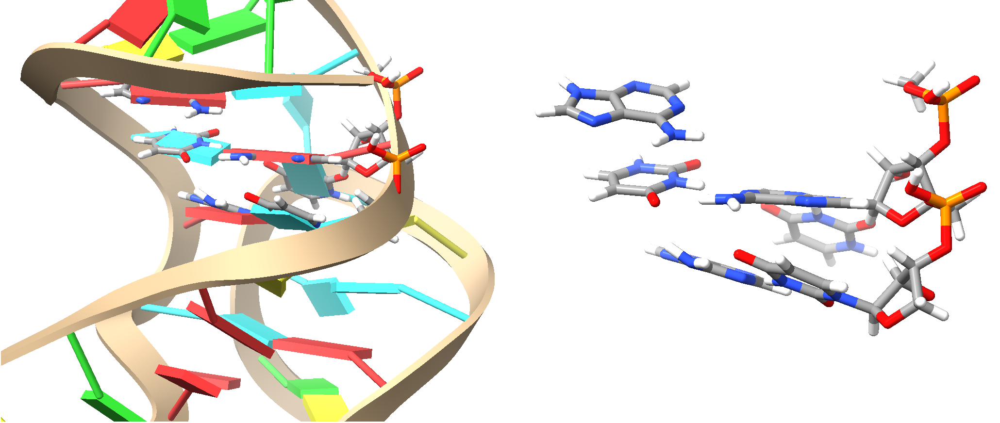
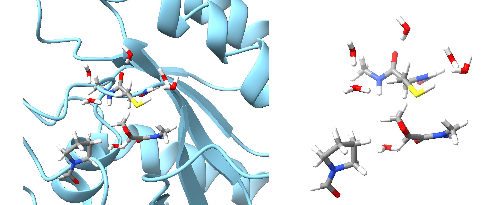

Overview on ORCA's Multiscale Implementation¶
ORCA features five primary methods suitable for diverse applications such as proteins, DNA, large molecules, explicit solvation, and crystalline solids:
-
Additive QM/MM for proteins and DNA/RNA.
-
QM1/QM2 (2-layered ONIOM) for small proteins, RNA, large molecules and explicit solvation.
-
QM1/QM2/MM (3-layered ONIOM) for proteins and DNA/RNA.
-
MOL-CRYSTAL-QMMM for molecular crystals.
-
IONIC-CRYSTAL-QMMM for semiconductors and insulators.
All methods integrate seamlessly with other ORCA modules, simplifying the preparation and execution of multiscale calculations.
The multiscale features are optimally connected to all other modules and tools available in ORCA allowing the user to handle multiscale calculations from a QM-centric perspective in a simple and efficient way, with a focus on simplifying the process to prepare, set up and run multiscale calculations. Since version 6.1 ORCA provides an automated tool for setting up QM and active regions, which is described here.
From the input side all methods share a common set of concepts and keywords, which will be outlined in this section. In subsequent sections the different methods are described and further input options are discussed.
Combining Multiscale Features with other ORCA Features¶
The multiscale features can be used together with all other possible ORCA methods:
-
Single Point Calculations: Use all kinds of available electronic structure methods as QM method.
-
Optimization: Use all kinds of geometry optimizations with all kinds of constraints, TS optimization, relaxed surface scans, and the ScanTS feature. Use the L-Opt and L-OptH features including the combination of all kinds of fragment optimizations (fix fragments, relax fragments, relax only specific elements in fragments, treat a fragment as a rigid body).
-
Transition States and Minimum Energy Paths: Use all kinds of Nudged-Elastic Band calculations Nudged-Elastic Band calculations (Fast-NEB-TS, NEB, NEB-CI, NEB-TS, including their ZOOM variants) and Intrinsic Reaction Coordinate calculations. (not implemented for
MOL-CRYSTAL-QMMMandIONIC-CRYSTAL-QMMM) -
Conformational Searches: Conformational Searches can be run with ORCA's GOAT module.
-
Frequency Calculations: Use regular frequency calculations. If required, ORCA automatically switches on the geomopt.partialhess (PHVA) li2002theor calculation. (not tested for
IONIC-CRYSTAL-QMMM) -
Molecular Dynamics: Use the Molecular Dynamics (MD) module for Born-Oppenheimer MD (BOMD) with QM/MM in combination with all kinds of electronic structure methods. (not implemented for
MOL-CRYSTAL-QMMMandIONIC-CRYSTAL-QMMM) -
Property Calculation: All kinds of regular property calculations are available. For electrostatic embedding the electron density is automatically perturbed by the surrounding point charges.
-
Excited State Calculations: Use all kinds of excited state calculations (TD-DFT, EOM, single point calculations, optimizations, frequencies).
Required Settings for a Multiscale Simulation¶
In the following, the basic concepts are introduced.
- QM atoms: The user can define the QM region either directly, or via flags in a pdb file. See multiscalesimulations.qmmm-regions. For an automated buildup
-
of the QM region with miminal user input see here.
-
Active Atoms: The user can choose an active region, e.g. for geometry optimizations the atoms that are optimized, for a frequency calculation the atoms that are allowed to vibrate for the PHVA, or for an MD run the atoms that are propagated. More background is provided here. Input options on how to define the active region in an automated way or in an explicit way are provided below.
A minimal user input for an ONIOM2 type calculation looks like this.
Other aspects that often need to be addressed for multiscale simulations are treated automatically and with reasonable defaults- which can, of course, be controlled by the user. The boundary treatment, i.e. bonds that have to be cut between QM and MM region, and the treatment of overpolarization is covered in the paragraph multiscalesimulations.qmmm-boundary. Available embedding types are discussed in section multiscalesimulations.qmmm-embedding. QM2 atoms, which define the low-level region in 3-layer ONIOM calculations, are discussed in section multiscalesimulations.oniom-qm2atoms.
Detailed information on the different available input and runtime options and additionally available keywords (see multiscalesimulations.qmmm-keywords) are given below.
Note
In order to check the multiscale setup done by ORCA, without the need to run the entire simulation, you can
invoke the keyword ! QMMMSetup.
This makes sure that ORCA stops after the multiscale preparation. The information on the QMMM setup is
printed in the output, and
a file with the QM region including link atoms is stored (basename_QM.xyz).
QM and Active Region Definition¶
QM and active region atoms can be defined in three different ways:
- Explicit definition of all atom indices.
- Defining the most important atoms (the
coreatoms) and ORCA determines the full QM and active region. - Definition in a pdb file.
Explicit Definition of QM and Active Region¶
The QM and active region can be directly defined in the input as shown in the following example:
%qmmm
QMAtoms {0 1 2 27 28} end # lists of atoms (counting starts from 0) or
ActiveAtoms {0:5 16 21:30} end # ranges of atoms (range defined via start:end)
end
*pdbfile 0 1 ubq.pdb
Automated Definition of QM and Active Region¶
A standard approach in the QMMM scientific literature for defining QM and active regions involves:
Identifying Important Atoms or Functional Groups¶
Examples include: - Atoms involved directly in bond formation or breakage. - Functional groups essential for spectroscopy. - Metal ions central to catalytic activities. - Entire molecules or ligands binding to proteins. - Additional criteria as necessary.
Including Surrounding Atoms¶
- Include all atoms within a defined spatial distance around these important atoms.
Applying Rules to Avoid Artifacts¶
Specifically ensure that: - The boundary between QM and MM regions cuts through a non-polarized single bond. - The topological distance between two QM-MM cuts (the MM gap) is sufficiently large, - preventing overly close placement of link atoms.
Automated procedure in ORCA 6.1¶
In ORCA 6.1, an automatic scheme has been developed to manage this multistep process. Users specify only key atoms (core atoms) that define the core part of the QM and active regions.
ORCA requires: - Knowledge of the system's topology. - Information about functional groups within the system.
Using the newly introduced fragmentation procedure, ORCA automatically determines this information at the start of the calculation. Functional groups are stored as separate fragments based on the user-selected fragmentation procedure.
Steps of the Automated Procedure (Illustrated for QM Region; analogous steps apply for active regions)¶
- Accept user-defined input
QMCoreAtoms. - If
QMCore_TypeisFragments, extendQMCoreAtomsto entire fragments, producing an updatedQMCoreAtomsset. - Determine all atoms within
QMCore_ExtensionÅ aroundQMCoreAtoms, yieldingQMAtoms. - If
QMCoreExtension_TypeisFragments, extendQMAtomsto entire fragments, updating the set again. - Include any explicitly user-defined atoms (
QMAtoms) in the automatically generated set. - If
CheckAutoFragForQMGapsistrue, verify no topologically close QM atoms are separated by fewer MM atoms thanQMGap_MinLength. If so, add necessary connecting fragments toQMAtoms. - If
CheckAutoFragBoundariesistrue, ensure that QM-MM boundaries do not cut polarized or problematic bonds. - Repeat steps 6 and 7 until no further fragments need addition.
Note
You can add the keyword QMMMSetup to your input. This allows you to check the autogenerated QM region (basename_QM.xyz) and verify the charge and multiplicity required for the actual multiscale calculation.
that is needed for the actual multiscale calculation.
The automated QM and active region setup can be defined in the input as shown in the following example:
! QM/XTB
! QMMMSetup # just do the preparation and stop
%qmmm
QMCoreAtoms {2032} end
ActiveCoreAtoms {2032} end
frag
FragProc NABackbone, NASideChains, FunctionalGroups, Extend, Connectivity
end
end
*xyz 0 1

QM region for QMCoreAtom 2032. Left is the QM region in ball-and-stick style as part of the full system in cartoon style, right is the QM region with link atoms. In the above example, which is a ligand bound to RNA, we first define the fragments using the fragmentator) using RNA specific groups and functional groups (for the ligand), and then build the QM and active region around the ligand (atom 2032 is an atom of the ligand).
! QMMMSetup # just do the preparation and stop
! QMMM
%qmmm
ORCAFFFilename "reactant.ORCAFF.prms"
QMCoreAtoms {183 2745} end
ActiveCoreAtoms {183 2745} end
frag
FragProc SEQBACKBONE, AASCFINEGRAINED, FUNCTIONALGROUPS, EXTEND, Connectivity
UseTopology true
TopolFile "reactant.ORCAFF.prms"
end
end
*pdbfile 0 1 reactant.pdb

QM region for QMCoreAtoms 183 and 2745. Left is the QM region in ball-and-stick style as part of the full system in cartoon style, right is the QM region with link atoms.
In the above example, involving a covalent ligand bound within a protein active site, we first define the fragments using
the fragmentator, specifying protein-specific groups and functional groups for
ligands and cofactors. We then construct the QM and active regions around the two critical atoms directly involved in
the covalent binding process: atom 183 from the Cys reside, and atom 2745 from the covalently binding ligand.
Options to automatically define the QM and active region.
| Keyword | Options | Description |
|---|---|---|
QMCOREATOMS |
{ints...} |
Defines the core atoms of the QM region. Single indices can be given as int int. Ranges of atom indices can be provided as int:int. All these can be combined. |
ACTIVECOREATOMS |
{ints} |
Defines the core atoms of the active region. |
Frag |
As defined here | |
QMCore_Type |
Fragments |
(Default) Take as QM core the atoms that the user defines plus all atoms of the fragments which they belong to. |
Atoms |
Take as QM core only the atoms that the user defines. | |
QMCoreExtension_Type |
Fragments |
(Default) Take as QMAtoms the atoms that belong to fragments which have at least one atom which has a distance of less than QMCore_Extension to any of the QMCoreAtoms. |
Atoms |
Take as QMAtoms the atoms that have a distance of less than QMCore_Extension to any of the QMCoreAtoms. |
|
QMCore_Extension |
real |
Distance by how much the QM core is extended to yield QMAtoms. Default 3. |
CheckAutoFragForQMGaps |
true/false |
Check whether two QM atoms show a QM gap, i.e. which are topologically connected by more than QMGap_MinLength MM atoms and if so, add the connecting fragments to QMAtoms. |
QMGap_MinLength |
0 to 6 |
Topological distance between two QM atoms which determines whether the connecting MM atoms are considered as a QM gap. Default 3 |
CheckAutoFragBoundaries |
true/false |
Check whether a QM-MM bond is an unpolar single bond. If not, add the MM atom's fragment to QMAtoms. |
ActiveCore_Type |
Fragments |
(Default) Take as active core the atoms that the user defines plus all atoms of the fragments which they belong to. |
Atoms |
Take as active core only the atoms that the user defines. | |
ActiveCoreExtension_Type |
Fragments |
(Default) Take as ActiveAtoms the atoms that belong to fragments which have at least one atom which has a distance of less than ActiveCore_Extension to any of the ActiveCoreAtoms. |
Atoms |
Take as ActiveAtoms the atoms that have a distance of less than ActiveCore_Extension to any of the ActiveCoreAtoms. |
|
ActiveCore_Extension |
real |
Distance by how much the active core is extended to yield ActiveAtoms. Default 5. |
CheckAutoFragForQMGaps_Active |
true/false |
Check whether two active atoms show a gap, i.e. they are topologically connected by more than QMGap_MinLength non-active atoms and if so, add the connecting fragments to ActiveAtoms. |
CheckAutoFragBoundaries_Active |
true/false |
Check whether an active-nonactive bond is an unpolar single bond. If not, add the non-active atom's fragment to ActiveAtoms. |
Note
Automated setup can be combined with explicit definition of QM or active atoms via QMAtoms and ActiveAtoms.
Definition of QM and Active Region via pdb file¶
The QM and active region can be defined in the pdb file as shown in the following example:
%qmmm
Use_QM_InfoFromPDB true # get the QMAtoms and ActiveAtoms definition from
Use_Active_InfoFromPDB true # the pdb file. The default for both is false.
# If InfoFromPDB is set to true, the QMAtoms or
# ActiveAtoms input is ignored
end
*pdbfile 0 1 ubq.pdb
If Use_QM_InfoFromPDB or Use_Active_InfoFromPDB is set to true, a pdb file should be used for
the structural input. QM atoms are defined via 1 in the occupancy
column, MM atoms via 0. Active atoms are defined via 1 in the B-factor
column, non-active atoms via 0.
ubq.pdb:
...
ATOM 327 N ASP A 21 29.599 18.599 9.828 0.00 0.00 P1 N
ATOM 328 HN ASP A 21 29.168 19.310 9.279 0.00 0.00 P1 H
ATOM 329 CA ASP A 21 30.796 19.083 10.566 0.00 1.00 P1 C
ATOM 330 HA ASP A 21 31.577 18.340 10.448 0.00 1.00 P1 H
ATOM 331 CB ASP A 21 31.155 20.515 10.048 2.00 1.00 P1 C
ATOM 332 HB1 ASP A 21 30.220 21.082 9.865 2.00 1.00 P1 H
ATOM 333 HB2 ASP A 21 31.754 21.064 10.801 2.00 1.00 P1 H
ATOM 334 CG ASP A 21 31.923 20.436 8.755 1.00 1.00 P1 C
ATOM 335 OD1 ASP A 21 32.493 19.374 8.456 1.00 1.00 P1 O
ATOM 336 OD2 ASP A 21 31.838 21.402 7.968 1.00 1.00 P1 O
ATOM 337 C ASP A 21 30.491 19.162 12.040 0.00 0.00 P1 C
ATOM 338 O ASP A 21 29.367 19.523 12.441 0.00 0.00 P1 O
...
Note
Contrary to the hybrid36 standard of PDB files, ORCA writes non-standard pdb files as:
-
atoms 1-99,999 in decimal numbers
-
atoms 100,000 and beyond in hexadecimal numbers, with atom 100,000 corresponding to index 186a0.
This ensures a unique mapping of indices. If you want to select an atom with an index in hexadecimal space (index larger than 100,000), convert the hexadecimal number into decimals when choosing this index in the ORCA input file. Note also, that in the pdb file, counting starts from 1, while in ORCA counting starts from zero.
Active Atoms in Combination with Optimization, Frequency Calculation, MD¶
The systems of multiscale calculations can become quite large with tens and hundreds of thousands of atoms. In multiscale calculations the region of interest is often only a particular part of the system, and it is common practice to restrict the optimization to a small part of the system, which we call the active region = active part of the system. For info on how to define the active region see multiscalesimulations.qmmm-regions. Usually this active part consists of hundreds of atoms, and is defined as the QM region plus a layer around the QM region. The same definition holds for frequency calculations, in particular since after optimization non-active atoms are not at stationary points, and a frequency calculation would lead to artifacts in such a scenario. MD calculations on systems with hundreds of thousands of atoms are not problematic, but there are applications where a separation in active and non-active parts can be important (e.g. a solute in a solvent droplet, with the outer shell of the solvent frozen).
Note
If no active atoms are defined, the entire system is treated as active.
Note
The active region definitions also apply to MM calculations, but
have to be provided via the %qmmm block.
Optimization in redundant internal coordinates¶
In ORCA's QM/MM geometry optimization only the positions of the active atoms are optimized. The forces on these active atoms are nevertheless influenced by the interactions with the non-active surrounding atoms. In order to get a smooth optimization convergence for quasi-Newton optimization algorithms in internal coordinates, it is necessary that the Hessian values between the active atoms and the directly surrounding non-active atoms are available. For that reason the active atoms are extended by a shell of surrounding non-active atoms which are also included in the geometry optimization, but whose positions are constrained, see fig:QMMM_ActiveRegion. This shell of atoms can be automatically chosen by ORCA. There are three options available:
Options to extend the active region.
| Keyword | Options | Description |
|---|---|---|
EXTENDACTIVEREGION |
DISTANCE |
(Default) The parameter Dist_AtomsAroundOpt controls which non-active atoms are included in the extension shell, i.e., non-active atoms that have a distance of less than the sum of their VDW radii plus Dist_AtomsAroundOpt are included. |
COV_BONDS |
All (non-active) atoms that are covalently bonded to active atoms are included. | |
NO |
No non-active atoms are included. |
The user can also provide the atoms for the extension shell manually. This will be discussed in section multiscalesimulations.qmmm-active-freq.
Active and non-active atoms. Additionally shown is the extension shell, which consists of non-active atoms close in distance to the active atoms. The extension shell is used for optimization in internal coordinates and PHVA.
The set of active atoms is called the 'activeRegion', and the set of active atoms plus the surrounding non-active atoms is called 'activeRegionExt'. During geometry optimization the following trajectories are stored (which can be switched off):
Files containing trajectories during optimization.
| Filename | Description |
|---|---|
basename_trj.xyz |
Entire QM/MM system |
basename.QMonly_trj.xyz |
Only QM region |
basename.activeRegion_trj.xyz |
Only active atoms |
basename.activeRegionExt_trj.xyz |
Active atoms plus extension |
The following files are stored containing the optimized structures - if requested:
Files containing optimized structures.
| Filename | Description |
|---|---|
basename.pdb |
Optimized QM/MM system in pdb file format |
basename.xyz |
Optimized QM/MM system |
basename.QMonly.xyz |
Only QM region |
basename.activeRegion.xyz |
Only active atoms |
basename.activeRegionExt.xyz |
Active atoms plus extension |
Optimization with the Cartesian L-BFGS Minimizer¶
For very large active regions the quasi-Newton optimization in internal
coordinates can become costly. It can be advantageous to use the
L-Opt or L-OptH feature, see section
optimization.lbfgs.
In the context of multiscale simulations it can also be useful to treat
parts of the system or full molecules of the system as rigid.
E.g. you can optimize the hydrogen positions of the protein and water
molecules, and at the same time relax non-standard molecules, for
which no exact bonded parameters are available, as rigid bodies.
For available options in that context see optimization.rigidbody.
An example is shown here:
!QMMM L-OptH
%qmmm
QMAtoms {22397:22423} end
ORCAFFFilename "DNA_hexamer.ORCAFF.prms"
end
*pdbfile 0 1 DNA_ligand.pdb
%frag
Definition
1 {22307:22396} end # cofactor
2 {22397:22423} end # ligand
end
end
%geom
RigidFrags {1 2} end # treat cofactor and ligand as individual rigid bodies
end
Frequency Calculation¶
If all atoms are active, a regular frequency calculation is carried out
when requesting !NumFreq. If there are also non-active atoms in the
QM/MM system, the geomopt.partialhess (PHVA) is
automatically selected. Here, the PHVA is carried out for the above defined
activeRegionExt, where the extension shell atoms are automatically used
as 'frozen' atoms. Note that the analytic Hessian is not available due
to the missing analytic second derivatives for the MM calculation. Note
that in a new calculation after an optimization it might happen that the
new automatically generated extended active region is different compared
to the previous region before optimization. This means that when using a
previously computed Hessian (e.g. at the end of an optimization or a
NEB-TS run) the Hessian does not fit to the new extended active region.
ORCA tries to solve this problem by fetching the information on the
extended region from the .hess file. If that does not work (e.g. if you
distort the geometry after the Hessian calculation) you should manually
provide the list of atoms of the extended active region. This is done
via the following keyword:
%qmmm
OptRegion_FixedAtoms {27 1288:1290 4400} end # manually define the
# activeRegionExt atoms.
end
Note that ORCA did print the necessary information in the output of the calculation in which the Hessian was computed:
Nudged Elastic Band Calculations¶
NEB calculations (section structurereactivity.neb) can be carried out in combination with the multiscale features in order to e.g. study enzyme catalysis. When automatically building the extension shell at the start of a Multiscale-NEB calculation, not only the coordinates of the main input structure ('reactant'), but also the atomic coordinates of the 'product' and, if available, of the 'transition state guess' are used to determine the union of the extension shell of the active region. For large systems it is advised to use the active region feature for the NEB calculation.
Note
The atomic positions of the non-active atoms of reactant and product and, if available, transition state guess, should be identical.
Molecular Dynamics¶
If there are active and non-active atoms in the multiscale system, only the active atoms are allowed to propagate in the MD run. If all atoms are active, all atoms are propagated. For more information on the output and trajectory options, see section moldyn:sec_regions.
Boundary Region¶
This section is important for the QM/MM, QM/QM2 and QM/QM2/MM methods. For the latter method two boundary regions are present (between QM and QM2 as well as between QM2 and MM region), and both can go through covalent bonds. In the following we will only discuss the concept for the boundary between QM and MM, but the same holds true for the other two boundaries.
Link Atoms¶
ORCA automatically generates link atoms based on the information of the
QM region and on the topology of the system (based on the ORCAFF.prms
file). ORCA places link atoms on the bond between QM and MM atoms.
Note
When defining the QM, QM2 and MM regions, make sure that you only cut through single bonds (not aromatic, double, triple bonds, etc.).
The distance between QM atom and link atom is determined via a bond length scaling factor (in relation to the QM-MM bond length) that is computed as the ratio of the equilibrium bond length between QM and hydrogen atom (\(d_{QM-H}\)) and the equilibrium bond length between QM and MM atom (\(d_{QM-MM}\)).
For the equilibrium bond lengths to hydrogen, ORCA uses tabulated
standard values for the most common atoms involved in boundary regions
(C, N, O), which can be modified via keywords as defined further
below. ORCA stores these values on-the-fly in a simple file
(basename.H_DIST.prms). If necessary, the user can modify these values
atom-specific or add others to the file and provide this file as input
to ORCA (see also
paragraph modelchemistries.mm-orcaforcefield-getHDist). For QM/QM2 and QM/QM2/MM
methods the equilibrium bond lengths to hydrogen are explicitly
calculated.
%qmmm
# standard equilibrium bond lengths with hydrogen can be modified
Dist_C_HLA 1.09 # d0_C-H
Dist_O_HLA 0.98 # d0_O-H
Dist_N_HLA 0.99 # d0_N-H
# file can be provided which provides the used d0_X-H values specific to all atoms
H_Dist_FileName "QM_H_dist.txt"
end
Bonded Interactions at the QM-MM Boundary¶
The MM bonded interactions within the QM region are neglected in the additive coupling scheme. However, at the boundary, it is advisable to use some specific bonded interactions which include QM atoms. By default ORCA neglects only those bonded interactions at the boundary, where only one MM atom is involved, i.e. all bonds of the type QM1-MM1, bends of the type QM2-QM1-MM1, and torsions of the type QM3-QM2-QM1-MM1. Other QM-MM mixed bonded interactions (with more than two MM atoms involved) are included. The user is allowed to include the described interactions, which is controlled via the following keywords:
%qmmm
DeleteLADoubleCounting true # Neglect bends (QM2-QM1-MM1) and torsions
# (QM3-QM2-QM1-MM1). Default true.
DeleteLABondDoubleCounting true # Neglect bonds (QM1-MM1)
end
Charge Alteration¶
If QM and MM atoms are connected via a bond (defined in the topology
file), the charge of the close-by MM atom (and its neighboring atoms)
has to be modified in order to prevent overpolarization of the electron
density of LA and QM region. This charge alteration is automatically
taken care of by ORCA in %qmmm block. ORCA provides the most popular schemes that can
be used to prevent overpolarization.
Options to modify the charge at the QM-MM boundary in order to prevent overpolarization.
| Keyword | Options | Description |
|---|---|---|
ChargeAlteration |
CS |
(Default) Charge Shift – Shift the charge of the MM atom away to the MM2 atoms so that the overall charge is conserved. |
RCD |
Redistributed Charge and Dipole – Shift the charge of the MM atom so that the overall charge and dipole are conserved. | |
Z0 |
Keep charges as they are. This MM atom will probably lead to overpolarization. | |
Z1 |
Delete the charge on the MM1 atom (no overall charge conservation). | |
Z2 |
Delete the charges on the MM1 atom and on its first (MM2) neighbors (no overall charge conservation). | |
Z3 |
Delete the charges on the MM1 atom and on its first (MM2) and second (MM3) neighbors (no overall charge conservation). | |
Scale_RCD |
real |
For RCD scheme, defines where on the bond between MM1 and MM2 the shifted charge is positioned. Default: 0.5, i.e., midpoint. |
Scale_CS |
real |
For CS scheme, defines where on the bond between MM2 and MM1/MM3 the shifted charge is positioned. Default: 0.06 × bond. |
Embedding Types¶
There are two embedding schemes available for treating the electrostatic interaction between high level and low level region. In the electrostatic embedding scheme the electrostatic interaction between QM and MM system is computed at the QM level. Thus, the charge distribution of the MM atoms (or other low level methods) can polarize the electron density of the QM region. The following embeding schemes are available:
Options for embedding scheme to treat the electrostatic interaction between high and low level region.
| Keyword | Options | Description |
|---|---|---|
Embedding |
Electrostatic |
(Default) The electrostatic interaction between the QM and MM system is computed at the QM level. |
Mechanical |
The electrostatic interaction between the QM and MM system is computed at the MM level. |
Note
In QMMM the LJ interaction between QM and MM system is always computed at the MM level.
In the scheme of electrostatic embedding, the evaluation of the electrostatic potential generated by the MM part can be accelerated by using the FMM algorithm (described in reference Greengard1987). This will speed up the building of the Fock Matrix. The default recommended setup can be called using the FMM-QMMM keyword directly in the keywords line. However, more details about the algorithm parameters and all input options can be found in (see also paragraph multiscalesimulations.fmm)
It is recommended to use that option whenever the MM part is composed of more than 10,000 atoms (or point charges for ECM methods).Additional Keywords¶
Here we list additional keywords and options that are accessible from
within the %qmmm block and that are relevant to QM/MM calculations.
Some of these keywords can also be accessed via the %mm block, see
section modelchemistries.mm-keywords.
!QMMM
%qmmm
# The extended active region, activeRegionExt, contains the atoms surrounding the
# active atoms.
ExtendActiveRegion distance # rule to choose the atoms belonging
# to activeRegionExt.
# no - do not use activeRegionExt atoms
# cov_bonds - add only atoms bonded covalently to
# active atoms
# distance (default) - use a distance criterion (VDW
# distance plus Dist_AtomsAroundOpt)
Dist_AtomsAroundOpt 0.0 # in Angstrom (Default 0). Meaning only freeze atoms
# which touch the active atoms by their VDW spheres.
# only needed for ExtendActiveRegion distance
OptRegion_FixedAtoms {27 1288:1290 4400} end # manually define the
# activeRegionExt atoms.
# Default: empty list.
# Printing options. All are true by default.
PrintLevel 1 # Can be 0 to 4, 0=nothing, 1=normal, ...
PrintOptRegion true # Additionally print xyz and trj for opt region
PrintOptRegionExt false # Additionally print xyz and trj for extended
# opt region
PrintQMRegion true # Additionally print xyz and trj for QM region
PrintFullTRJ true # Print trajectory of full system. Default true.
PrintPDB true # Additionally print pdb file for entire system, is
# updated every iteration for optimization
# Computing MM nonbonded interactions within non-active region.
Do_NB_For_Fixed_Fixed true # Compute MM-MM nonbonded interaction also for
# non-active atom pairs. Default true.
# Treats all active water molecules that are treated on MM level as rigid bodies
# in optimization and MD simulation, see section "Rigid Water".
Rigid_MM_Water false # Default false.
end
*pdbfile 0 1 ubq.pdb # structure input via pdb file, but also possible via
# xyz file
Additional keywords in the %qmmm block, which are also accessible from the %mm block.
| Keyword | Options | Description |
|---|---|---|
ORCAFFFilename |
"<filename>" |
Filename of the ORCA Force Field prms file. |
Do_NB_For_Fixed_Fixed |
true/false |
Compute MM-MM nonbonded interaction also within the non-active region (i.e., for non-active atom pairs). Default true. For GOAT and Crystal-QMMM, default is false. |
RIGID_MM_WATER |
true/false |
Optimization and MD of active MM waters. Default false. |
ExtendActiveRegion |
distance |
Use a distance criterion (VDW distance plus Dist_AtomsAroundOpt) to extend the active region. |
cov_bonds |
Add only atoms covalently bonded to active atoms. | |
no |
Do not add any atoms to the extended active region. | |
Dist_AtomsAroundOpt |
<real> |
Distance (in Å) to add to VDW radius for ExtendActiveRegion. Default: 0. |
OptRegion_FixedAtoms |
{ints} |
List of atoms to define the extended active region. Default: empty list. |
PrintOptRegion |
true/false |
Additionally print .xyz and .trj files for the optimization region. Default true. |
PrintOptRegionExt |
true/false |
Additionally print .xyz and .trj files for the extended optimization region. Default false. |
PrintPDB |
true/false |
Additionally print .pdb file for the entire system, updated every optimization iteration. Default false. |